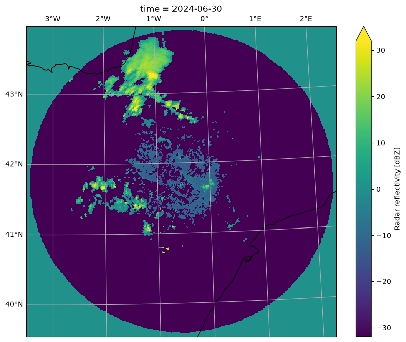
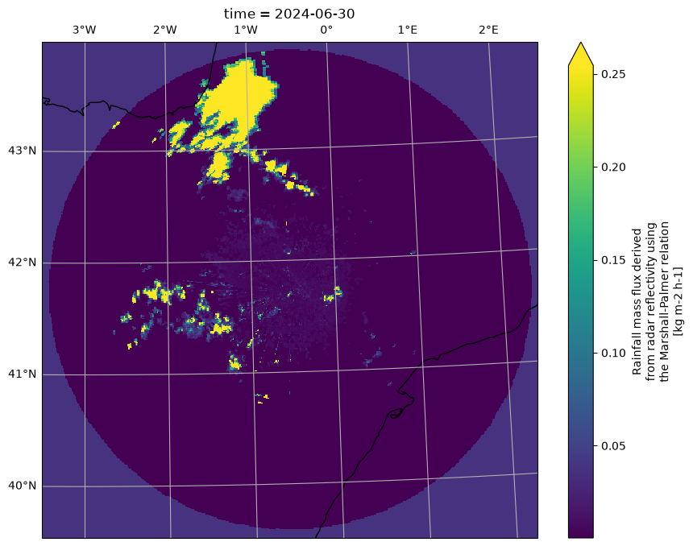

AEMET - Zaragoza single-site radar reflectivity and rainfall rate#
This notebook describes how to access and use the Zarr versions of the radar reflectivity and rainfall rate datasets for the Zaragoza radar (ZAR). The datasets are derived from radar products and have been converted into CF/MLCAST-compliant Zarr archives.
The datasets contain equivalent radar reflectivity factor fields in dBZ and rainfall rate in \(\mathrm{kg\ m^{-2}\ h^{-1}}\) (equivalent to mm/h for water).
The datasets provide 1 km gridded data on a 493 × 494 grid covering Zaragoza and the surrounding area in northeastern Spain (3.49°W–2.60°E, 39.54–43.84°N), with 10-minute temporal resolution and coverage from 2020 to 2024.
The dataset has been generated with the code hosted on https://github.com/mlcast-community/mlcast-dataset-ES-AEMET/tree/main
import matplotlib.pyplot as plt
import cartopy.crs as ccrs
import mlcast_datasets
cat = mlcast_datasets.open_catalog()
list(cat.precipitation)
['radklim_hourly',
'radklim_5_minutes',
'dmi_10_minutes',
'it_dpc_sri_5min',
'uk_metoffice_5min',
'be_rmi_radclim_mfb_5min',
'es_aemet_ppi_zar_10_minutes',
'es_aemet_sri_zar_10_minutes',
'fr_mf_prate_5min']
AEMET - ZAR radar 10-min reflectivity#
Mlcast catalog contains multiple datasets, hence to call specifically for AEMET Zaragoza radar ppi data:
ds = cat.precipitation.es_aemet_ppi_zar_10_minutes.to_dask()
ds
<xarray.Dataset> Size: 241GB
Dimensions: (time: 247771, y: 494, x: 493, missing_times: 15317)
Coordinates:
* time (time) datetime64[ns] 2MB 2020-01-01 ... 2024-12-31T23:50:00
* y (y) float64 4kB 4.377e+06 4.378e+06 ... 4.869e+06 4.87e+06
* x (x) float64 4kB 4.578e+05 4.588e+05 ... 9.49e+05 9.5e+05
lat (y, x) float32 974kB dask.array<chunksize=(494, 493), meta=np.ndarray>
lon (y, x) float32 974kB dask.array<chunksize=(494, 493), meta=np.ndarray>
* missing_times (missing_times) datetime64[ns] 123kB 2020-01-08T05:30:00 ....
Data variables:
dbz (time, y, x) float32 241GB dask.array<chunksize=(1, 494, 493), meta=np.ndarray>
spatial_ref int32 4B ...
Attributes: (12/18)
CDI: Climate Data Interface version 1.8.2 (...
history: Converted from NetCDF radar files to Zarr
Conventions: CF-1.10
GDAL: GDAL 2.2.3, released 2017/11/20
CDO: Climate Data Operators version 1.8.2 (...
title: Radar test dataset converted to GeoZar...
... ...
mlcast_created_with: https://github.com/mlcast-community/ml...
mlcast_dataset_version: 0.1.0
mlcast_dataset_identifier: ES-AEMET-radar_reflectivity-ppi_ZAR
mlcast_dataset_identifier_format: {country_code}-{entity}-{physical_vari...
consistent_timestep_start: 2020-01-01T00:00
base_frequencies: 10min:2020-01-01T00:00/Nonevar_name = "dbz"
crs_name = ds[var_name].grid_mapping
data_crs = ccrs.Projection(ds[crs_name].crs_wkt)
print(data_crs)
PROJCRS["ETRS89 / UTM zone 30N",BASEGEOGCRS["ETRS89",ENSEMBLE["European Terrestrial Reference System 1989 ensemble",MEMBER["European Terrestrial Reference Frame 1989"],MEMBER["European Terrestrial Reference Frame 1990"],MEMBER["European Terrestrial Reference Frame 1991"],MEMBER["European Terrestrial Reference Frame 1992"],MEMBER["European Terrestrial Reference Frame 1993"],MEMBER["European Terrestrial Reference Frame 1994"],MEMBER["European Terrestrial Reference Frame 1996"],MEMBER["European Terrestrial Reference Frame 1997"],MEMBER["European Terrestrial Reference Frame 2000"],MEMBER["European Terrestrial Reference Frame 2005"],MEMBER["European Terrestrial Reference Frame 2014"],MEMBER["European Terrestrial Reference Frame 2020"],ELLIPSOID["GRS 1980",6378137,298.257222101,LENGTHUNIT["metre",1]],ENSEMBLEACCURACY[0.1]],PRIMEM["Greenwich",0,ANGLEUNIT["degree",0.0174532925199433]],ID["EPSG",4258]],CONVERSION["UTM zone 30N",METHOD["Transverse Mercator",ID["EPSG",9807]],PARAMETER["Latitude of natural origin",0,ANGLEUNIT["degree",0.0174532925199433],ID["EPSG",8801]],PARAMETER["Longitude of natural origin",-3,ANGLEUNIT["degree",0.0174532925199433],ID["EPSG",8802]],PARAMETER["Scale factor at natural origin",0.9996,SCALEUNIT["unity",1],ID["EPSG",8805]],PARAMETER["False easting",500000,LENGTHUNIT["metre",1],ID["EPSG",8806]],PARAMETER["False northing",0,LENGTHUNIT["metre",1],ID["EPSG",8807]]],CS[Cartesian,2],AXIS["(E)",east,ORDER[1],LENGTHUNIT["metre",1]],AXIS["(N)",north,ORDER[2],LENGTHUNIT["metre",1]],USAGE[SCOPE["Engineering survey, topographic mapping."],AREA["Europe between 6°W and 0°W: Faroe Islands offshore; Ireland - offshore; Jan Mayen - offshore; Norway including Svalbard - offshore; Spain - mainland - onshore and offshore."],BBOX[35.26,-6,80.49,0.01]],USAGE[SCOPE["Pan-European conformal mapping at scales larger than 1:500,000."],AREA["Europe between 6°W and 0°W and approximately 35°15'N to 80°30'N."],BBOX[35.26,-6.01,80.49,0]],ID["EPSG",25830]]
da = ds[var_name].sel(time="2024-06-30").isel(time=0)
data_crs = ccrs.UTM(
zone=30,
southern_hemisphere=False,
)
fig = plt.figure(figsize=(10, 8))
ax = plt.axes(projection=data_crs)
da.plot(
ax=ax,
transform=data_crs,
cmap="viridis",
robust=True,
add_colorbar=True,
)
ax.set_xlim(
float(da.x.min()),
float(da.x.max()),
)
ax.set_ylim(
float(da.y.min()),
float(da.y.max()),
)
ax.coastlines()
ax.gridlines(draw_labels=["top", "left"])
plt.show()

AEMET - ZAR radar 10-min rainfall rate#
Mlcast catalog contains multiple datasets, hence to call specifically for AEMET Zaragoza radar sri data:
ds = cat.precipitation.es_aemet_sri_zar_10_minutes.to_dask()
ds
<xarray.Dataset> Size: 234GB
Dimensions: (time: 240289, y: 494, x: 493, missing_times: 22799)
Coordinates:
* time (time) datetime64[ns] 2MB 2020-01-01 ... 2024-12-31T23:50:00
* y (y) float64 4kB 4.377e+06 4.378e+06 ... 4.869e+06 4.87e+06
* x (x) float64 4kB 4.578e+05 4.588e+05 ... 9.49e+05 9.5e+05
lat (y, x) float32 974kB dask.array<chunksize=(494, 493), meta=np.ndarray>
lon (y, x) float32 974kB dask.array<chunksize=(494, 493), meta=np.ndarray>
* missing_times (missing_times) datetime64[ns] 182kB 2020-01-02 ... 2024-1...
Data variables:
rainfall_rate (time, y, x) float32 234GB dask.array<chunksize=(1, 494, 493), meta=np.ndarray>
spatial_ref int32 4B ...
Attributes: (12/18)
CDI: Climate Data Interface version 1.8.2 (...
history: Converted from NetCDF radar files to Z...
Conventions: CF-1.10
GDAL: GDAL 2.2.3, released 2017/11/20
CDO: Climate Data Operators version 1.8.2 (...
title: Radar test dataset converted to GeoZar...
... ...
mlcast_created_with: https://github.com/mlcast-community/ml...
mlcast_dataset_version: 0.1.0
mlcast_dataset_identifier: ES-AEMET-rainfall_rate-sri_ZAR
mlcast_dataset_identifier_format: {country_code}-{entity}-{physical_vari...
consistent_timestep_start: 2020-01-01T00:00
base_frequencies: 10min:2020-01-01T00:00/Nonevar_name = "rainfall_rate"
crs_name = ds[var_name].grid_mapping
data_crs = ccrs.Projection(ds[crs_name].crs_wkt)
print(data_crs)
PROJCRS["ETRS89 / UTM zone 30N",BASEGEOGCRS["ETRS89",ENSEMBLE["European Terrestrial Reference System 1989 ensemble",MEMBER["European Terrestrial Reference Frame 1989"],MEMBER["European Terrestrial Reference Frame 1990"],MEMBER["European Terrestrial Reference Frame 1991"],MEMBER["European Terrestrial Reference Frame 1992"],MEMBER["European Terrestrial Reference Frame 1993"],MEMBER["European Terrestrial Reference Frame 1994"],MEMBER["European Terrestrial Reference Frame 1996"],MEMBER["European Terrestrial Reference Frame 1997"],MEMBER["European Terrestrial Reference Frame 2000"],MEMBER["European Terrestrial Reference Frame 2005"],MEMBER["European Terrestrial Reference Frame 2014"],MEMBER["European Terrestrial Reference Frame 2020"],ELLIPSOID["GRS 1980",6378137,298.257222101,LENGTHUNIT["metre",1]],ENSEMBLEACCURACY[0.1]],PRIMEM["Greenwich",0,ANGLEUNIT["degree",0.0174532925199433]],ID["EPSG",4258]],CONVERSION["UTM zone 30N",METHOD["Transverse Mercator",ID["EPSG",9807]],PARAMETER["Latitude of natural origin",0,ANGLEUNIT["degree",0.0174532925199433],ID["EPSG",8801]],PARAMETER["Longitude of natural origin",-3,ANGLEUNIT["degree",0.0174532925199433],ID["EPSG",8802]],PARAMETER["Scale factor at natural origin",0.9996,SCALEUNIT["unity",1],ID["EPSG",8805]],PARAMETER["False easting",500000,LENGTHUNIT["metre",1],ID["EPSG",8806]],PARAMETER["False northing",0,LENGTHUNIT["metre",1],ID["EPSG",8807]]],CS[Cartesian,2],AXIS["(E)",east,ORDER[1],LENGTHUNIT["metre",1]],AXIS["(N)",north,ORDER[2],LENGTHUNIT["metre",1]],USAGE[SCOPE["Engineering survey, topographic mapping."],AREA["Europe between 6°W and 0°W: Faroe Islands offshore; Ireland - offshore; Jan Mayen - offshore; Norway including Svalbard - offshore; Spain - mainland - onshore and offshore."],BBOX[35.26,-6,80.49,0.01]],USAGE[SCOPE["Pan-European conformal mapping at scales larger than 1:500,000."],AREA["Europe between 6°W and 0°W and approximately 35°15'N to 80°30'N."],BBOX[35.26,-6.01,80.49,0]],ID["EPSG",25830]]
da = ds[var_name].sel(time="2024-06-30").isel(time=0)
data_crs = ccrs.UTM(
zone=30,
southern_hemisphere=False,
)
fig = plt.figure(figsize=(10, 8))
ax = plt.axes(projection=data_crs)
da.plot(
ax=ax,
transform=data_crs,
cmap="viridis",
robust=True,
add_colorbar=True,
)
ax.set_xlim(
float(da.x.min()),
float(da.x.max()),
)
ax.set_ylim(
float(da.y.min()),
float(da.y.max()),
)
ax.coastlines()
ax.gridlines(draw_labels=["top", "left"])
plt.show()

# NOTE:
# Although the data are stored in ETRS89 / UTM zone 30N (EPSG:25830),
# using `ccrs.epsg(25830)` may cause Cartopy to clip part of the domain.
# This is related to the projection bounds inferred internally from the
# EPSG definition, rather than to an issue with the dataset coordinates.
#
# To avoid this clipping behaviour, the projection is defined explicitly
# as UTM zone 30N. For plotting purposes, this provides the expected
# projection geometry and correctly displays the full spatial domain.
data_crs = ccrs.UTM(
zone=30,
southern_hemisphere=False,
)